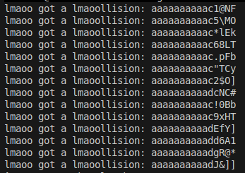
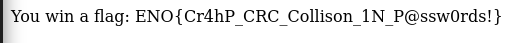

Web Challenge - CRC Hash Collision Exploit Link to heading
Challenge Description Link to heading
In this challenge, we are provided with the source code of a PHP script along with two hints:
- Hint 1: PHP documentation link for crc32()
- Hint 2: A PHP CRC8 implementation
The goal is to retrieve the flag by bypassing an authentication mechanism based on CRC hashes.
CRC, CRC16 and CRC8 Link to heading
CRC (Cyclic Redundancy Check) CRC is an error-detecting code commonly used to check data integrity during transmission or storage. It is not cryptographically secure, making it vulnerable to collisions.
CRC16 and CRC8 These are variants of CRC that produce 16-bit and 8-bit checksums respectively.
- CRC16: yields values between 0x0000 and 0xFFFF (65,536 possibilities)
- CRC8: yields values between 0x00 and 0xFF (256 possibilities)
Why is this weak? Unlike cryptographic hashes like SHA-256, CRCs are easy to break. Different inputs can easily produce the same CRC, allowing us to exploit collisions.
✔️ Summary: CRC is a fast but insecure checksum used for error detection, not security.
Code Analysis Link to heading
Here are the relevant portions of the PHP code provided in the challenge:
1. Authentication Check Link to heading
<?php
if(isset($_POST['password']) && strlen($MYPASSWORD) == strlen($_POST['password'])) {
$pwhash1 = crc16($MYPASSWORD);
$pwhash2 = crc8($MYPASSWORD);
$password = $_POST['password'];
$pwhash3 = crc16($password);
$pwhash4 = crc8($password);
if($MYPASSWORD == $password) {
die("oops. Try harder!");
}
if($pwhash1 != $pwhash3) {
die("Oops. Nope. Try harder!");
}
if($pwhash2 != $pwhash4) {
die("OoOps. Not quite. Try harder!");
}
$access = true;
if($access) {
echo "You win a flag: $FLAG";
} else {
echo "Denied! :(";
}
} else {
echo "Try harder!";
}
?>
2. Key Observations Link to heading
-
The original password is
AdM1nP@assW0rd! -
You cannot submit the exact same password (
if($MYPASSWORD == $password)). -
The script validates with two CRC functions:
crc16andcrc8:crc16($MYPASSWORD) == crc16($password)crc8($MYPASSWORD) == crc8($password)
-
If both match and the passwords aren’t equal, we get the flag.
Exploitation: CRC Collision Link to heading
Since CRC16 and CRC8 are not secure, it’s possible to find a different password that gives the same CRC values.
Goal Link to heading
Find a password different from AdM1nP@assW0rd! that produces the same CRC16 and CRC8.
Exploit Steps (Python Script) Link to heading
We use a Python script to:
1. Calculate CRC16 and CRC8 Link to heading
from pwn import *
import itertools
import string
import multiprocessing
def crc16(data: str):
crc = 0xFFFF
for char in data:
crc ^= ord(char)
for _ in range(8):
if crc & 1:
crc = (crc >> 1) ^ 0xA001
else:
crc >>= 1
return crc
def crc8(data: str):
crc8Table = [... all 256 values ...]
crc = 0
for char in data:
crc = crc8Table[(crc ^ ord(char)) & 0xFF]
return crc & 0xFF
2. Set Targets Link to heading
original_password = "AdM1nP@assW0rd!"
crc16_target = crc16(original_password)
crc8_target = crc8(original_password)
3. Brute-force using Multithreading Link to heading
charset = string.ascii_letters + string.digits + string.punctuation
password_length = len(original_password)
def brute_force(start_idx):
for attempt in itertools.islice(itertools.product(charset, repeat=password_length), start_idx, None, multiprocessing.cpu_count()):
test_password = ''.join(attempt)
if test_password != original_password and crc16(test_password) == crc16_target and crc8(test_password) == crc8_target:
print(f"Collision found: {test_password}")
return
if __name__ == "__main__":
num_cores = multiprocessing.cpu_count()
pool = multiprocessing.Pool(processes=num_cores)
pool.map(brute_force, range(num_cores))
Collision Found Link to heading
After running the script, we successfully found multiple passwords different from AdM1nP@assW0rd! but producing the same CRC values.

Flag Retrieved Link to heading
